1. Kendala dalam Penyusunan Produk Pembelajaran
Dalam proses penyusunan perangkat pembelajaran berupa modul ajar, LKPD, lembar asesmen, dan bahan ajar, kendala utama yang dihadapi adalah heterogenitas karakteristik Murid pada setiap kelas.
Terdapat kelas dengan Murid yang aktif dan cepat memahami materi, kelas yang cenderung pasif namun memiliki kemampuan akademik baik, serta kelas yang pasif dan masih membutuhkan pendampingan intensif. Dalam penerapannya, media pembelajaran juga perlu disesuaikan dengan fasilitas sekolah dan karakteristik tiap kelas. Hal ini menjadi pembelajaran penting mengenai pentingnya kontekstualisasi dan fleksibilitas dalam penyusunan perangkat pembelajaran.
Selain itu, materi Informatika seperti algoritma, flowchart, dan spreadsheet membutuhkan kemampuan berpikir logis serta keterampilan praktik langsung menggunakan perangkat komputer.
Kendala lain yang ditemukan adalah pengelolaan waktu pembelajaran karena aktivitas berbasis proyek dan praktik sering kali membutuhkan waktu lebih panjang dibandingkan alokasi yang tersedia. Serta
Contoh Aktual di Kelas
- • Pada kelas X-11, sebagian Murid masih kesulitan memahami simbol flowchart sehingga guru memberikan demonstrasi ulang secara perlahan.
- • Pada kelas X-1, Murid cenderung aktif dan cepat memahami materi algoritma sehingga guru dapat langsung melanjutkan ke tahap penyusunan pseudocode dan flowchart.
- • Saat praktik fungsi IF di spreadsheet, beberapa peserta didik salah menuliskan sintaks rumus sehingga hasil output tidak muncul.
- • Pada pembelajaran proyek algoritma, beberapa kelompok membutuhkan waktu lebih lama menyusun logika percabangan.
Bukti Pendukung
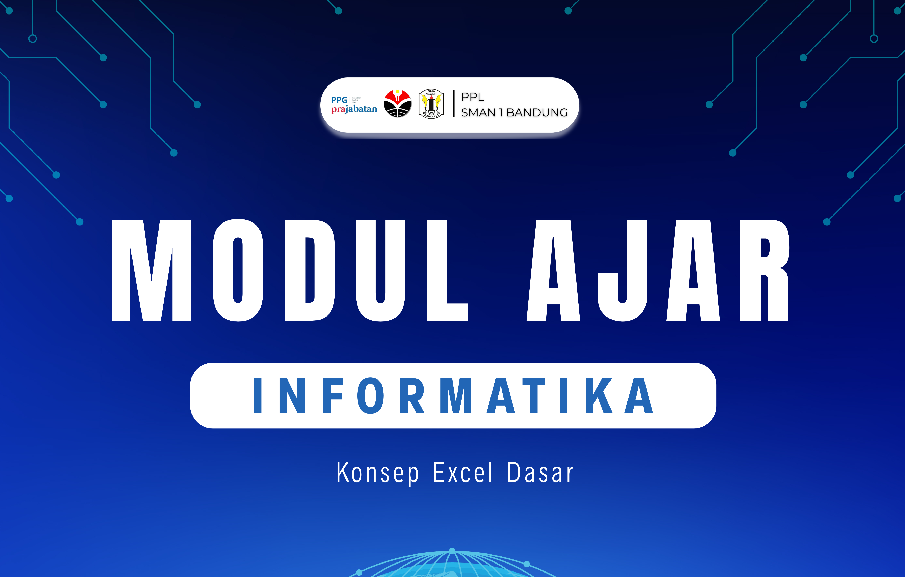
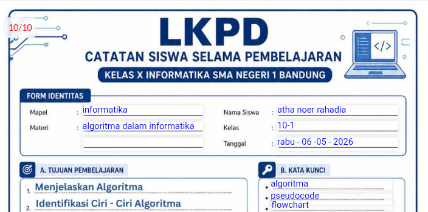
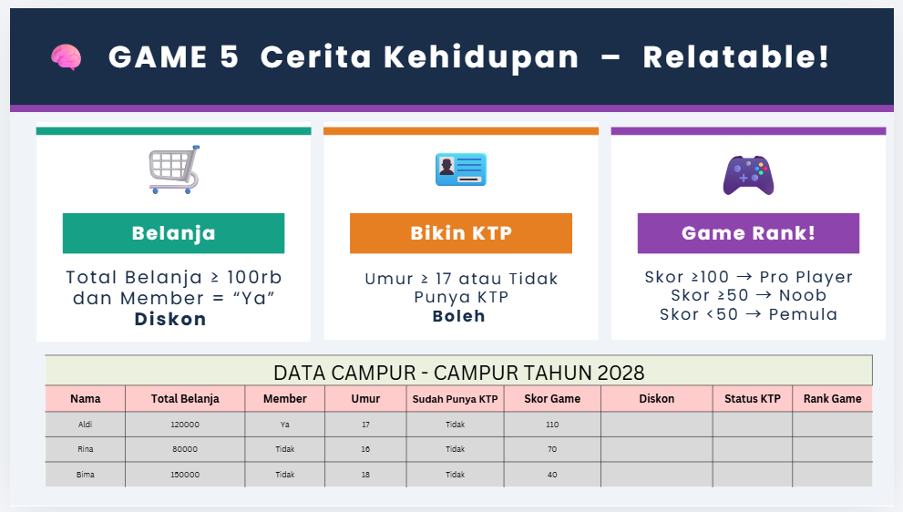
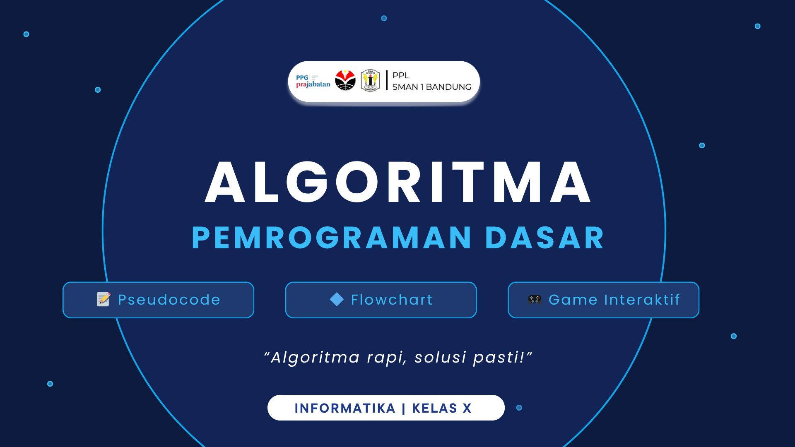
Dokumentasi: kendala penyusunan produk pembelajaran seperti modul ajar, LKPD, lembar asesmen, dan bahan ajar,
2. Teori dan Konsep Pedagogi yang Diadopsi
Perangkat pembelajaran disusun dengan mengadopsi beberapa teori dan konsep pedagogi agar pembelajaran lebih bermakna, kontekstual, dan berpusat pada Murid.
| Problem-Based Learning (PBL) |
Model PBL diterapkan untuk melatih kemampuan berpikir kritis dan pemecahan masalah melalui kasus nyata.
“Murid diberikan studi kasus data penjualan untuk menentukan kategori laris dan tidak laris.”
| Direct-Learning |
Guru perlu memberikan penjelasan dan demonstrasi secara bertahap agar peserta didik memahami konsep dasar sebelum melakukan praktik mandiri.
Pada materi fungsi IF di spreadsheet, guru terlebih dahulu mendemonstrasikan cara menuliskan rumus, menentukan range data, dan membaca hasil output melalui proyektor.
| Constructivism |
Guru tidak langsung memberikan definisi algoritma, tetapi mengawali pembelajaran dengan pertanyaan pemantik seperti:
“Bagaimana langkah membuat mie instan?” Dari jawaban peserta didik, guru mengarahkan bahwa urutan langkah tersebut merupakan bentuk sederhana dari algoritma.
| Differentiated Instruction |
Strategi diferensiasi diterapkan karena kemampuan dan karakteristik peserta didik pada setiap kelas berbeda.
Pada kelas aktif, Murid diberikan tantangan tambahan membuat flowchart lebih kompleks. Pada kelas yang masih kesulitan, guru memberikan template pseudocode setengah jadi.
| Scaffolding dan ZPD |
Guru memberikan bantuan bertahap kepada Murid yang belum mampu menyelesaikan tugas secara mandiri.
"Saat praktik spreadsheet, beberapa peserta didik belum memahami penggunaan range data pada fungsi AVERAGE. Guru kemudian memberikan contoh langsung mulai dari memilih sel hingga menuliskan formula dengan benar.”
| Mindful, Meaningful, Joyful Learning |
- Meaningful Learning : Materi algoritma dikaitkan dengan aktivitas sehari-hari seperti login media sosial dan pemesanan online.
- Joyful Learning : Guru menggunakan game “Flowchart Maze” dan kuis Quizizz sehingga suasana belajar lebih interaktif.
- Mindful Learning : Murid diajak merefleksikan kesalahan logika algoritma dan memperbaikinya bersama.
Bukti Pendukung
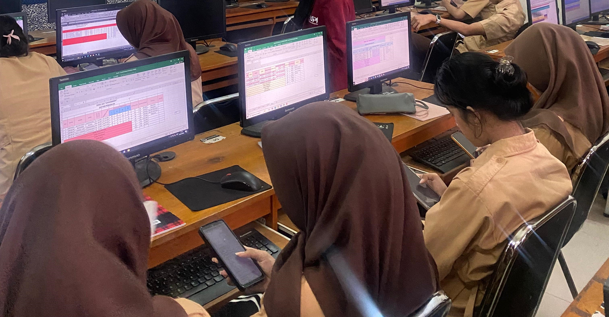
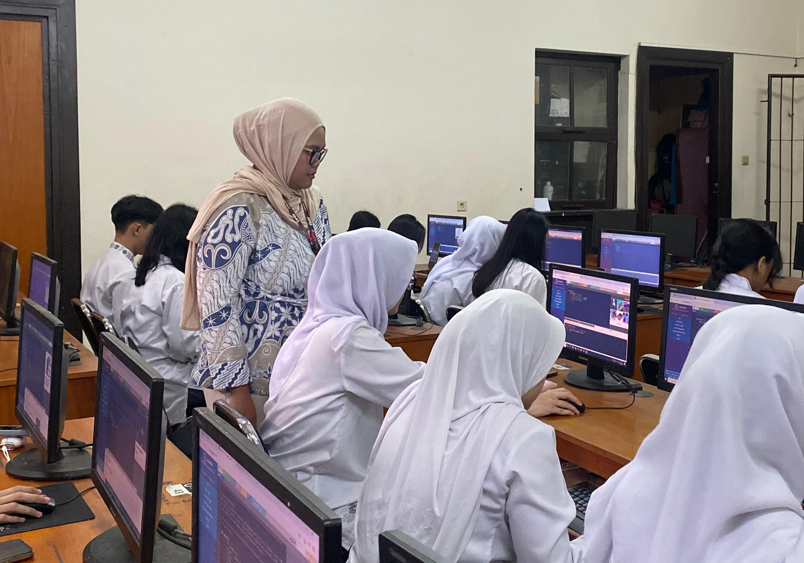
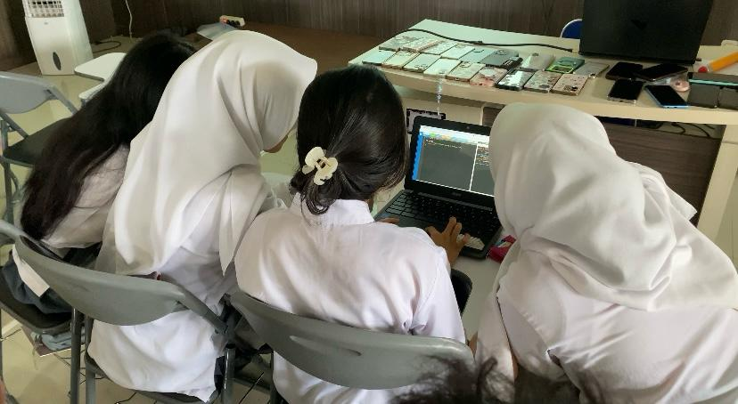
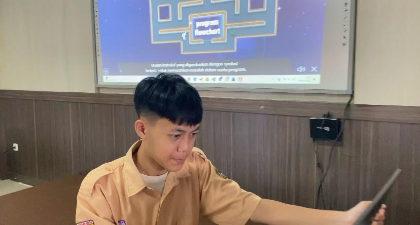
Dokumentasi: Penerapan model PBL, Direct-Learning, dan aktivitas diskusi kelompok.
3. Faktor Keberhasilan Penerapan Produk Pembelajaran
Keberhasilan perangkat pembelajaran dipengaruhi oleh penggunaan pendekatan yang kontekstual, aktivitas praktik langsung, serta pemanfaatan media digital yang interaktif.Peserta didik menunjukkan keterlibatan aktif (student engagement) yang tinggi ketika pembelajaran dilakukan secara praktik menggunakan komputer masing-masing.
Penggunaan LKPD yang terstruktur membantu Murid memahami alur pembelajaran secara bertahap dan lebih mandiri. Media digital seperti Quizizz, Wordwall, spreadsheet, dan game interaktif meningkatkan motivasi belajar Murid.
Contoh Aktual di Kelas
- • Murid antusias saat praktik fungsi SUM, MIN, MAX, dan AVERAGE.
- • Game “Flowchart Maze” membuat Murid aktif berdiskusi.
- • Kuis Quizizz meningkatkan semangat belajar karena adanya leaderboard.
- • LKPD membantu Murid mengulang langkah penggunaan formula.
Bukti Pendukung
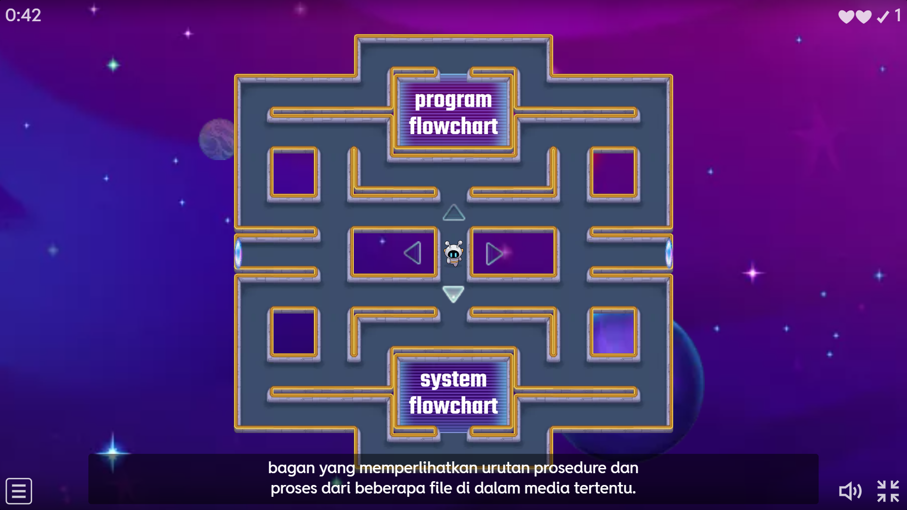

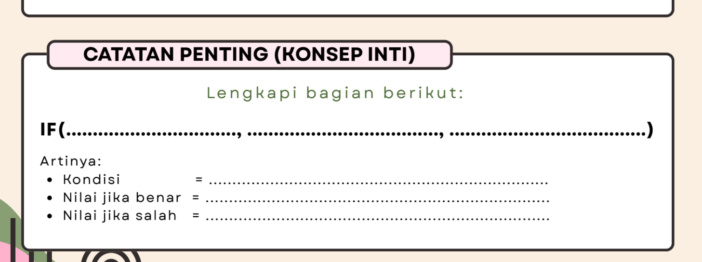
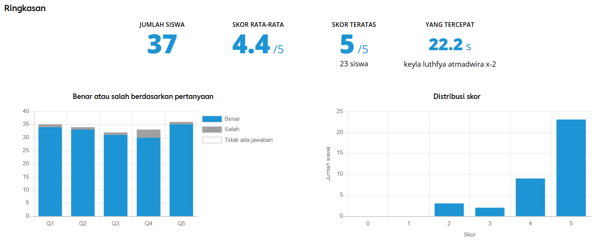
Dokumentasi aktivitas praktik komputer dan penggunaan media digital.
4. Komponen yang Dapat Diadaptasi
Perangkat pembelajaran perlu bersifat fleksibel agar dapat diterapkan pada kondisi kelas yang berbeda. Adaptasi dilakukan berdasarkan karakteristik peserta didik, tingkat kesiapan belajar, fasilitas sekolah, serta dinamika pembelajaran di kelas.
Strategi Pembelajaran
- ➤ Pada kelas aktif, guru menggunakan diskusi terbuka dan presentasi kelompok.
- ➤ Pada kelas pasif, guru menggunakan demonstrasi langsung dan pertanyaan pemantik sederhana.
Tingkat Kompleksitas Tugas
- ➤ Peserta didik yang cepat memahami materi diberikan tantangan membuat algoritma dengan percabangan tambahan.
- ➤ Peserta didik yang masih kesulitan diberikan kasus sederhana seperti algoritma membuat teh atau login akun.
Alokasi Waktu Pembelajaran
- ➤ Pada kelas yang cepat memahami materi, guru dapat menambahkan aktivitas pengayaan berupa kuis atau tantangan tambahan.
- ➤ Pada kelas yang membutuhkan pendampingan lebih, guru memperpanjang sesi demonstrasi dan latihan praktik.
Media Pembelajaran
- ➤ Pada kelas dengan akses komputer penuh, Murid langsung praktik spreadsheet.
- ➤ Jika terdapat kendala perangkat, guru menggunakan simulasi melalui proyektor dan diskusi kelompok.
Pengembangan Media Digital
Ke depan, media pembelajaran direncanakan dikembangkan dalam bentuk website pembelajaran terintegrasi agar seluruh perangkat pembelajaran tersimpan secara sistematis.
Saat ini materi, LKPD, asesmen, dan link game masih tersimpan di platform yang berbeda seperti Google Drive, Canva, dan Quizizz. Oleh karena itu, direncanakan pengembangan website pembelajaran agar peserta didik dapat mengakses seluruh materi dalam satu tempat secara lebih efektif dan terorganisasi.